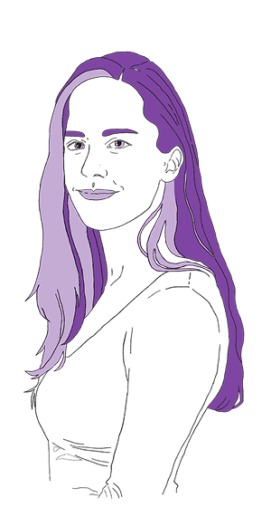

ABOUT ME
HEY ;)
I'm Francesca,
I'm Francesca,
a UX/UI Designer with a university background in Oriental languages (2012-2019) and a Master's Course in UX/UI Design from start2impact University (2024).
Through my studies in design, I worked on practical projects, where I applied UX methodologies to solve real user problems.
I'm passionate about understanding how things work and how to improve everyone’s experiences with them.
Now I’m studying as a Full Stack Dev after feeling the need, as a UX Designer, to go deeper and understand how what we design it’s actually built, because to me it felt as the best way to see the whole picture.
In my free time, you'll probably find me traveling, taking photos, playing videogames or tasting wines.
